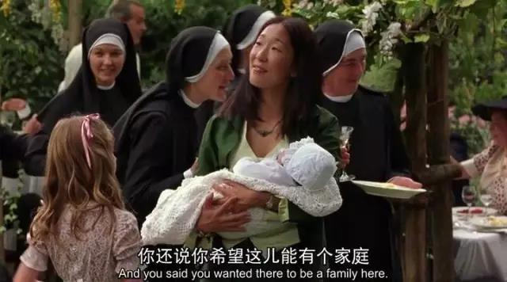

正文:
以卡尔维诺的一句话开始这道题的答案：
别的地方是一块反面的镜子。旅行者能够看到他自己所拥有的何等的少，而他所未曾拥有、和永远不会拥有的是何等的多。 Elsewhere is a negative mirror. The traveler recognizes the little that is his, discovering the much he has not had and will never have.
上大学时我很喜欢出去旅游，因为常常一个人，所以多是住在青旅。在青旅里我遇见过不少人，都说他们出来旅游是因为深陷工作的不愉快或者恋情的失意，想要去到一个新的地方转换心情。也的确有一些人，说去到陌生的地方旅行好像有神奇的力量，能够给到他们新的灵感，重新面对不如意的生活。
旅行是提供了一种逃避现实的方式，还是真的能塑造一个焕然一新的自己？
一部我很喜欢的电影《托斯卡纳艳阳下》就讲述了一个旅行的故事，它也许能给我们一个解答。
逃离旧环境却不变旧心境，
新的自由只是一种假自由
在影片的一开始，主角弗朗西斯陷入了人生的僵局。她是一个三十多岁的女教授兼作家，她一直深爱她的丈夫，即使她的丈夫一直假借写作的名义没有工作挣钱，一家的开支都靠弗朗西斯，她也从没有抱怨过什么。
然而，弗朗西斯遭遇了人生的双重打击：在写作上，她灵感枯竭，无法继续创作新小说；更糟的是，她的丈夫不仅自己有了婚外情向她提出离婚，还向她要房子的所有权，作为她赔偿给他的赡养费。
不得已，弗朗西斯只好搬出了自己的房子，搬进了一个短租公寓。房东一见到她就问，“你离婚了吗？”
原来，这样的公寓就是为像弗朗西斯一样的婚姻失败者准备的。她的邻居是一位要离婚却拖了三年的律师，他也因此把自己困在痛苦里三年，经常无缘无故地就开始痛哭，哭声大到每每传到隔壁的房间。
关上房门，弗朗西斯感慨着说“到家了”，失败者（loser）的身份似乎给了她一种微妙的归属感。
搬家后，弗朗西斯的闺蜜们为弗朗西斯庆祝她恢复单身重获自由。她们为她打气希望她乐观起来，并一起为她重获自由干杯。
她们也赠送了弗朗西斯一份单身礼物——去托斯卡纳旅行的机票，希望她能够在旅途中停止消沉，并且重新开始她的小说写作。
然而，弗朗西斯却用种种借口推脱了。虽然庆祝着离开了糟糕的婚姻获得了自由，然而弗朗西斯并没有就此打开自我，也没有真的准备好开始一段新的人生。她实际上还陷在失败的泥淖里，她的“自由”不过是一种假自由。

直到有一天，弗朗西斯终于无法再忍受隔壁律师的时不时的痛哭，决定接受去托斯卡纳的建议。
抵达意大利后，她的第一站就遇上了科尔托那小镇的“集市日”，每个人状态都是惬意放松的，弗朗西斯开始一点一滴地被这种热烈的氛围感染。

就在那天，她在乘坐大巴车旅游的途中，意外遇见了一栋有300多年历史的别墅。某种直觉推动着她中途下车，并买下了这栋房子。
别墅的名字叫做“向往太阳”，然而名不副实，年久失修。弗朗西斯开始修缮她买下的老别墅，那是个庞大且旷日持久的工程。她雇来波兰的装修工们帮忙，日子在忙碌中一天天流走。
新的国度，新的房子，似乎意味着新的生活就此开始了，然而，事实上仍然没有。当好友在电话里无意提到前夫的名字时，弗朗西斯仍然格外敏感地发起火来，说明她仍然对上一段关系格外在意。
在一次修剪常青藤时，她看见一条蛇溜进了她的房间。管家马提尼前来帮她赶蛇，她在马提尼面前她崩溃了，仿佛这么长时间以来，在新房子里的孤军奋战都失去了意义。她依然沉湎在伴侣背叛的伤痛，以及对于自我生活意义缺失的迷茫中，并没有真正地走出来。
她忍不住和管家诉说着离婚的痛苦，当曾经深爱的人告诉自己“我从未爱过你”是怎样一种生不如死的感受。

她也诘问着管家，自己的确拥有这栋大房子，但是独身一人的她，却并不需要那么多的房间，甚至没有人需要她为之煮一顿晚餐。那么她一个人买下这偌大的房子的意义何在？
相信好的东西会到来，
比它真的到来更重要
面对弗朗西斯的崩溃，马提尼用一段铁轨的故事回答了她的问题。
他说，曾经的人们在奥地利与意大利的一段悬崖峭壁之间修筑铁轨，然而那时火车尚未通行，人们修铁轨的唯一理由是他们相信总有一天火车会开到这里。
他其实想告诉弗朗西斯，她要相信那些她藏在心底的买房子的理由——她之所以买房子，还是因为梦想着未来的生活。她想要和自己的家人生活在这栋房子里，以及想在房子里举行自己的婚礼——而它们总有一天会成真的。
管家的话打动了弗朗西斯，她决定重拾生活。她开始学习食谱，同装修工人们打成一片，主动为装修工们做饭，算是实现了“有人需要自己为之做饭”的愿望。
一天，她和装修工波兰年轻人帕瓦一同去看电影。在电影院里，她看见帕瓦眼里对心上人炙热的爱意，她鼓励帕瓦去勇敢追求，自己则一个人步出电影院。她走到了朋友凯瑟琳的家，又撞见了凯瑟琳和她的年轻情人在约会。接连看到他人的爱情，令她想到自己仍旧独身的事实，她再次变得沮丧起来。
这时，凯瑟琳劝她别再沉迷于悲伤，和弗朗西斯分享了童年找瓢虫的回忆。
凯瑟琳说，其实好事就和瓢虫一样，当你苦苦地寻觅它的时候它常不会出现，当你放弃寻找安安心心地睡了个午觉，它们反而可能成片地出现。

弗朗西斯开始走出自己的房子，去意大利的其他地方逛逛。在罗马的街头，为了躲开一些男人的搭讪与跟踪，她无意吻了帅气的意大利男人马尔赛洛，一场美丽的邂逅就此展开。
马尔赛洛开车沿着海岸线，带弗朗西斯来到了他家的古董店。当弗朗西斯问他今天原来有没有什么计划的时候，马尔赛洛只告诉她应该把握当下，及时行乐。他赞美弗朗西斯的眼睛，一起度过了美好的一个晚上，并约定下周末再聚。
她的新恋情就这样在不经意间展开了。
旅行的意义往往不在于看见新风景，
而在于获得看待自己的新眼光
下一个周末来了，就在她准备启程去和马尔赛洛重会的时候，好友的到来打破了她的计划，原来怀孕好友即将生产，却也遭遇了失恋，只能绝望地来意大利找她寻求支持。
弗朗西斯决定留下来，陪她被伴侣抛弃的朋友。过了几天，马尔赛洛来到她的家中找她，她恰好不在家错过了，她十分失落，并气愤朋友没有帮她留下他。
也就在这一周，她的朋友临盆了，她的家里迎来了一个新生命，仿佛有了“一家人”。

随着房子的维护工程结束，花园被清理干净，装修队也离开了，家中再次变得冷清起来。在一个午后，弗朗西斯收到了从美国寄来的一个包裹，里面装满她过去收藏的纪念品和食谱，其中还夹着一张她与前夫的亲密合照。
也就在那瞬间，她终于醒悟：背着那段回忆生活只会给自己带来无尽的痛苦。她决定放下过去，拥抱未来。她迫不及待地换上了衣服，穿得就像马尔赛洛留给她的信中说的那样，“我梦见你穿了一件白外套”。她赶往波西塔诺寻找马尔赛洛，并没有事先通知他，因为“每次计划事情反而都不能实现”。
然而，抵达马尔塞洛家的时候，她发现对方已经有了新欢，瞬间就从过山车的最高点掉到了最低点，她质问马尔赛洛为什么不能够等她，马尔赛洛给出了一个浪漫却残酷的回答：我们有过一段不错的关系，但我们是截然不同的两类人，不可能永远在一起，相逢过就应该知足。
从某种意义上来说，弗朗西斯再次被抛弃了。和上一次被抛弃一样，她感到痛苦伤心，但不一样的是，这次她并没有绝望，更没有失去对爱的信心。
相反，身处低谷的她帮助了装修工帕瓦求婚成功。帕瓦的岳父一直反对自己的女儿奇亚拉同这个一穷二白的年轻波兰男孩结婚。
当奇亚拉的父亲咄咄逼人地劝奇亚拉放弃，“这个男孩什么都不能给你”、“你们只是出于青春的激情”时，弗朗西斯却告诉奇亚拉的父亲，虽然她自己还没有找到真爱，但是她相信它的存在。尽管这时她自己还只是一个人，她的力量也并不强大，弗朗西斯仍坚定地站在了帕瓦这边。她愿意做帕瓦的家人，给予他全部的支持。奇亚拉的父亲最后被说服了，同意将女儿嫁给帕瓦。

帕瓦的婚礼在弗朗西斯的家中顺利举行了。年轻的新婚夫妻穿着白色的婚纱礼服，好友抱着怀里刚出生的宝宝，阳光和微风拂过所有宾客微笑的脸。
对于弗朗西斯个人来说，影片并没有一个大团圆的结局，她依然单身，依然遭遇了失恋，也依然没有组建家庭。但是，就如同管家马提尼在婚礼上提醒弗朗西斯的那样，她曾经许下的愿望——在她的新家中举办一场婚礼以及拥有一个家庭——其实都已经在不知不觉中实现了。
尽管实现的方式和原来的祈愿大不相同，然而这并不妨碍弗朗西斯感受到他人的幸福。最为重要的是，她已经学会了在不美满的人生中保持乐观，等待真正属于她的那份真爱的降临。

每当我们想到旅行，第一个浮现脑海里的往往是“换个环境，换个心情”。然而并不是新地点的风景给了我们以新的心情。真正让我们心境转变的，是我们在新地方学会的、看待自己和生活的新眼光。就像弗朗西斯初到托斯卡纳的时候，金黄色的向日葵花海、橘红色的老宅以及市集日上五颜六色的货物，种种色彩饱和度极高的风景都曾带给过她惊喜，然而这些色彩却不曾抹去她心头的灰色。
直到她在托斯卡纳经历了种种奇遇后，她才发现，与其等待某一天，有一种新的生活从天而降，不如说，新的生活就是眼前的生活，只不过你用新的方式度过它。弗朗西斯给装修工人做饭，与邻居一家人结为真心而密切的朋友，在家中接生了闺蜜的孩子，承办了邻居的婚礼等等，都是她找到的新的方式。在家中做饭聚餐、有一大家人一起生活、孩子、婚礼，这些愿望都没有实现，但换了一种方式它们又全都实现了。
生活是吝啬的，可能不会给你与你许愿想得到的一模一样的东西。但它会幽默地把你想要的东西，换个模样藏在你身边，看你有没有把它们找出来的智慧。
旅行的意义，不在于新的地点和新的风景，而在于你从他人的生活中，习得自己不曾有过的新的方式。当你能够用一种新的眼光重新看到自己的生活，你可能就能够找到那些其实早已在你身边的，你最想要的东西。
希望你也能轻装上路，看到更多的可能性，也发现新的自己。
以上。
原文发表于：旅行的意义不是看见新的风景，而是用新的眼光看待自己｜KY观影：托斯卡纳艳阳下
了解更多与心理相关的知识、研究、话题互动、人物访谈等等，欢迎关注KnowYourself - 知乎
宇宙中最酷的心理学社区，人人都能看懂，但只有一部分人才会喜欢